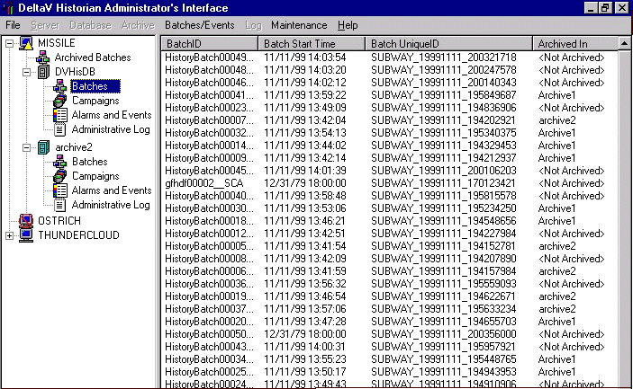

Batch Historian administration
The Batch Historian Administration client is a Windows-based tool for performing database management activities. Any Batch Historian detected on the network is automatically displayed in the left pane. Each Historian contains a listing of batch IDs for batches stored within its main database as well as the location of batches stored in its archive databases. Process alarms and events are also catalogued for each Batch Historian, allowing users to locate and archive the alarm/event data associated with a batch.

Use the Batch Historian Administration client to:
Archive batch and continuous event data to offline mass storage media
Delete batch and continuous event data from the Batch Historian database after it has been archived
Restore data from offline storage media for online viewing
Monitor Batch Historian database size, statistics, and server status
Record all administrative activities in a log to provide an accurate trail of events
Create Source Linkages that can be used to include process related alarms and trends in batch reports